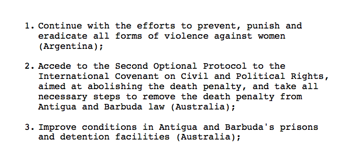

Chapter 4 Introduction
4.1 The Motivation
Here's the dream:
Computers have revolutionized research, and that revolution is only beginning. Every day, social scientists and humanists all over the world use them to study things that are too big, too small, too fast, too slow, too expensive, too dangerous, or just too hard to study any other way.
Now here's the reality
Every day, scholars all over the world waste time wrestling with computers. Tasks that should take a few moments take hours or days, and many things never work at all. When scholars try to get help, they are inundated with unhelpful information, and give up.
This sorry state of affairs persists for three reasons:
No room, no time. Everybody's schedule is full —- there's simply not space to add more about computing without dropping something else.
The blind leading the blind. The infrastructure doesn't exist to help scholars develop the skills they need. Senior researchers can't teach the next generation how to do things that they don't know how to do themselves.
Autodidact Chauvinism. Since there are no classrooms, scholars are pressured to teach themselves. But self-learning is time consuming and nearly impossible without a base level of knowledge.
Despite these challenges, there are great reasons to learn how to program:
1. Practical Efficiency
Even though it takes some time at first, learning how to program can save you an enormous amount of time doing basic tasks that you would otherwise do by hand, once you get the hang of it.
2. New Tools
Some things are impossible, or nearly impossible to do by hand. Computers open the door for new tools and methods, but many require programming skills.
3. New Data
The Internet is a wealth of data, waiting to be analyzed! Whether its collecting Twitter data, working with the Congress API, or scraping websites, programming knowledge is a must.
4. Better Scholarship
(Quality) programming can open the door to better transparency, reproducibility, and collaboration in the Social Sciences and the Humanities.
Goal of the Class: Learn to Learn
The basic learning objective of this course is to leave here with the knowledge and skills required to learn on your own, whether that's through programming documentation, StackExchange and other online fora, courses or D-Lab workshops.
By the end of the course, students should be able to:
- Understand basic programming terminologies, structures, and conventions.
- Write, execute, and debug R code.
- Produce reproducible analyses using R Markdown.
- Clean, transform, and wrangle data using the
tidyversepackages. - Scrape data from websites and APIs.
- Parse and analyze text documents.
- Be familiar with the concepts and tools of a variety of computational social science applications.
- Master basic Git and GitHub workflows
- Learn independently and train themselves in a variety of computational applications and tasks through online documentation.
This Course will not...
- teach you to be a professional programmer or software developer
- teach you statistics, computer science, or specialized social science / digital humanities methods
Why not just take a Computer Science course?
Computer science courses don't anticipate the types of questions social scientists might ask, and therefore they - introduce many unnecessary concepts - do a poor job of explaining how computer programming tools might be used by social scientists - are too resource intensive for the average social scientist
Programming is not just use useful for computer scientists, methodologists, or people who work with "big data."
A Practical example
To illustrate, here's a practical example that comes out of my own research:
Task 1 (by hand)
Topic: International Human Rights "Naming and Shaming"
Question: Who Shames Whom on What?
Data: UN Human Rights Committee's Universal Periodic Review
From Antigua & Barbuda 2011 review:

The Task: Parse a bunch of reports (PDFs) into a dataset (CSV). Add metadata for issue, action, sentiment.

How much time will it take?
By hand: 40,000 recommendations x 3 min per recommendation x 8-hour days x 5-day weeks = 12 months
Task 2 (by hand)
What if we wanted to extend this research?
Question: How does UPR shaming compare to actual human rights abuses?
Data: Amnesty International's Urgent Actions
Task: Collect all of Amnesty International's Urgent Actions, add metadata for issue, country.

How much time will it take?
By hand: 25,000 recommendations x 3 min per recommendation x 8-hour days x 5-day weeks = 7.5 months
Tasks 1 & 2 (with a computer)
With a computer, we can write a program that:
- Parses recommendations into a CSV.
- Codes recommendations by issue, action, sentiment using computational text analysis tools.
- Uses webscraping to collect all of Amnesty International's urgent actions.
- Run simple regression models with R to correlate Amnesty reports with UPR shaming.
Total time: 2 months
Time Saved: 1.5 years
4.2 About This Class
About Me
My name is Rochelle Terman and I'm a faculty member in Political Science.
- A few years ago, I didn't know how to program. Now I program almost every day.
- I program mostly in Python and R. I have a special interest in text analysis and webscraping.
- My substantive research is on international norms and human rights.
- I won't be able to answer all your questions.
- No one will.
- But especially me.
Course Structure
The course is divided into two main sections:
1. Skills
Basic computer literacy, terminologies, and programming languages:
- Base R: objects and data structures.
tidyversefor data analysis.- Modeling and visualization.
- Key programming concepts (iteration, functions, conditional flow, etc).
We're using R because it's the common programming language among Political Scientists. But if you understand the concepts, you should able to pick up Python and other languages pretty easily.
2. Applications
Use the skills they learned in part 1 towards practical applications:
- Webscraping.
- APIs.
- Computational Text Analysis.
- Version control and communication.
The goal is to introduce the students to a medley of common applications so that they can discover which avenue to pursue in their own research, and what such training would entail.
Class Activities
Classes will follow a "workshop" style, combining lecture, demonstration, and coding exercises. We envision the class to be as interactive / hands on as possible, with students programming every session. You must bring a laptop to class.
It is important that students complete the requisite reading before class. I anticipate spending 1/2 the class lecturing, and 1/2 practicing with code challenges.
Course Websites
Class notes and other materials are available here: https://github.com/plsc-31101/course/
We will also be using Canvas to distribute/accept assignments, and for discussion. Please use the discussion forums liberally.
Evaluation
This is a graded class based on the following: - Completion of assigned homework (50%) - Participation (25%) - Final project (25%)
If you want to audit, please let me know ASAP.
Assignments
- In general, assignments are assigned at the end of lecture, and due the following week.
- Exceptions will be noted.
- The first assignment is due next week, before class on Thursday Oct 10. It is on Canvas.
- Turn in assignments on Canvas.
- Work in groups, but submit your own.
Participation
The class participation portion of the grade can be satisfied in one or more of the following ways:
- attending the lectures,
- asking and answering questions in class,
- attending office hours,
- contributing to class discussion through the Canvas/Piazza site,
- collaborating with the computing community.
Final Project
Students have two options for class projects:
Data project: Using the tools we learned in class on your own data of interest.
Tutorial project: Create a tutorial on a tool we didn't cover in class.
Both options require an R markdown file narrating the project.
Students are required to write a short proposal by November 7 (no more than 2 paragraphs) in order to get approval / feedback from the instructors.
Project materials (i.e. a github repo) will be due by end of day on December 9. We will specify submission details in class.
On December 10 we will have a lightning talk session where students can present their projects in a maximum 5 minute talk.
Software
- Installation instructions are onthe website.
- Get started EARLY.
- Then go to the Installfest (Wednesday, Oct 2, 9:30-11:30 in Pick 504) to double check your installation.
- If you have computer troubles, post the problem on the discussion forums, with as much detail as possible.
4.3 Learning How to Program
Before we talk about what it takes to learn how to program, let's first review what programming is.
What is Programming?
A program is a sequence of instructions that specifies how to perform a computation. Most programs are written in a human-readable programming language (or "source code") and then executed with the help of a compiler or interpreter.
A few basic instructions appear in just about every language:
- input: Get data from the keyboard, a file, the network, or some other device.
- output: Display data on the screen, save it in a file, send it over the network, etc.
- math: Perform basic mathematical operations like addition and multiplication.
- conditional execution: Only perform tasks if certain conditions are met.
- iteration: Do the same task over and over again on different inputs.
That being said, programming languages differ from one another in the following ways:
- Syntax: whether to add a semicolon at the end of each line, etc.
- Usage: JavaScript is for building websites, R is for statistics, Python is general purpose, etc.
- Level: how close you are to the hardware. 'C' is often considered to be the lowest (or one of the lowest) level languages.
- Object-oriented: "objects" are data + functions. Some programming languages are object-oriented (e.g. Python) and some aren't (e.g. C).
- Many more: Here's a list of all the types of programming languages out there.
What Language Should You Learn?
Most programmers can program in more than one language. That's because they know how to program generally, as opposed to "knowing" Python, R, Ruby, or whatever.
So what should your first programming language be? That is, what programming language should you use to learn how to program? At the end of the day, the answer depends on what you want to get out of programming. Many people recommend Python because it's fun, easy, and multi-purpose. Here's an article that can offer more advice.
In this class, we'll be using R because it's the most popular language in our disciplnary community (of Political Scientists.)
Regardless of what you choose, you will probably grow comfortable in one language while learning the basic concepts and skills that allow you to 'hack' your way into other languages. That's because programming is an extendible skill.
Thus "knowing how to program" means learning how to think like a programmer, not necessarily knowing all the language-specific commands off the top of your head. Don't learn specific programming languages; learn how to program.
What Programming is Really Like

Here's the sad reality: When you're programming, 80% or more of your time will be spent debugging, looking stuff up (like program-specific syntax, documentation for packages, useful functions, etc.), or testing. This does not just apply to beginner or intermediate programmers, although you will grow more "fluent" over time.
Google software engineers write an average of 10-20 lines of code per day. The Lesson: Programming is a slow activity, especially in the beginning.
If you're a good programmer, you're a good detective!
How to Learn
Here are some tips on how to learn computer programming:
Learning to program is 5% intelligence, 95% endurance.
Like learning to play an instrument or speak a foreign language, it takes practice, practice, practice.
Program a little bit every day.
Program with others. Do the problem sets in pairs or groups.
It's better to type than to copy and paste.
Most "programming" is actually researching, experimenting, thinking.
Stay organized.
The 15 minute rule
15 min rule: when stuck, you HAVE to try on your own for 15 min; after 15 min, you HAVE to ask for help.- Brain AMA pic.twitter.com/MS7FnjXoGH
— Rachel Thomas ((???)) August 14, 2016
We will follow the 15 minute rule in this class. If you encounter a problem in your assignments, spend 15 minutes troubleshooting the problem on your own. After 15 minutes, if you still cannot solve the problem, ask for help.
(Hat tip to Computing for Social Sciences)
Debugging
Those first 15 minutes should be spent trying to debug your code. Here are some tips:
- Read the errors!
- Read the documentation
- Make it smaller
- Figure out what changed
- Check your syntax
- Print statements are your friend
Using the Internet
You should also make use of Google and StackOverflow to resolve the error. Here's some tips for how to google errors:
- google: name-of-program + text in error message.
- Remove user- and data-specific information first!
- See if you can find examples that do and don't produce the error. Try other people's code, but don't fall into the copy-paste trap.
Asking for Help
We will use Canvas/Piazza for class-related questions and discussion. You are highly encouraged to ask questions, and answer one another's questions.
- Include a brief, informative title.
- Explain what you're trying to do, and how it failed.
- Include a reproducible example.
Here are some helpful guidelines on how to properly ask programming questions: